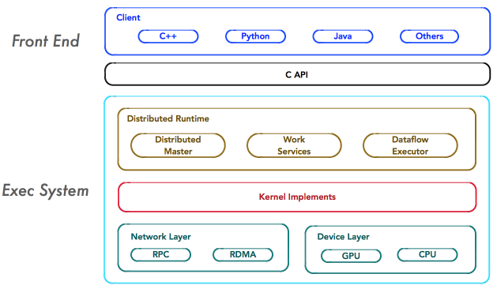
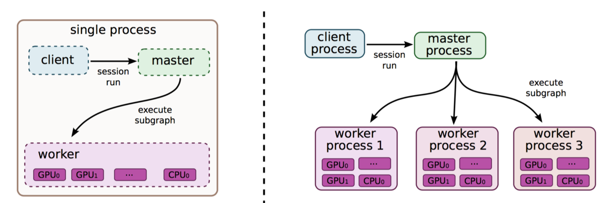

A Long Summary of Deep Learning Compile

DL compilers: DL models describes in DL frameworks -> optimized code for DL hardware
Background Explanation
Deep Learning Framework
TensorFlow
TensorFlow支持较多语言，基于数据流图进行计算，目前使用Keras作为前端。
基本结构可以表示如下：

- 其中
client为前端的主要组成，用于构建计算图，在1.x中通过session接口与master相连。 - 运行时
master在计算图中反向遍历，找到所依赖的最小子图，负责则管理并在分布式场景将子图分发给worker。master会缓存子图片段以便后续使用，避免重复计算。 worker负责实际执行，根据可用设备(GPU/CPU)调用kernel完成计算。

Keras
一个用Python实现的神经网络library，可以作为前端, 以TensorFlow, CNTK等为后端使用。由于其封装性较高，较难添加op或者获取较low-level的信息。
Pytorch
PyTorch在python解释器中执行控制流，与TensorFlow提前构建计算图的静态框架不同，它的计算图是动态的。
1 | #TODO: a deeper understanding of it |
The most representative general-purpose hardware for DL models is GPU, which achieves high parallelism with many-core architecture.
1 | #TODO: add architectureof GPU |
Dedicated Hardware
Dedicated hardware is fully customized for DL computation to improve performance and energy efficiency to extreme. The most well known dedicated DL hardware is Google’s TPU series.
1 | #TODO: add architectureof TPU |
Neuromorphic
Neuromorphic chips use electronic technology to simulate the biological brain.
Hardware-specific DL Code Generator
Processor Architecture
Streaming Architecture
Common Design Architecture
Frontend, IR, backend.